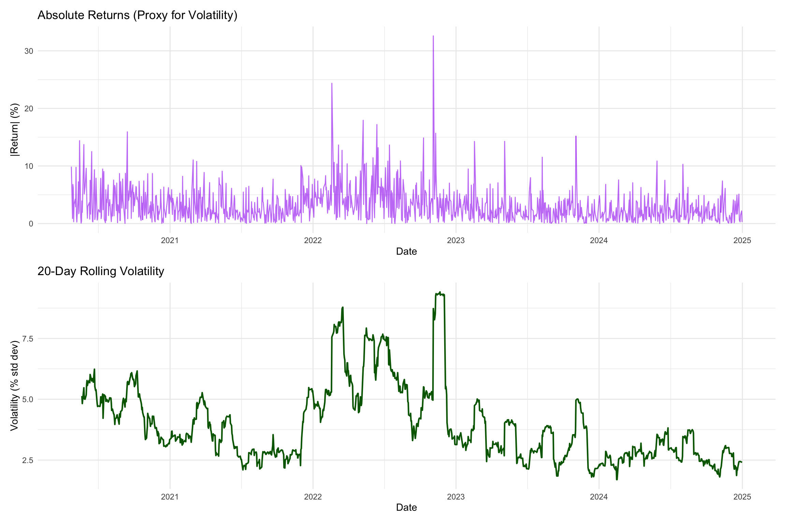
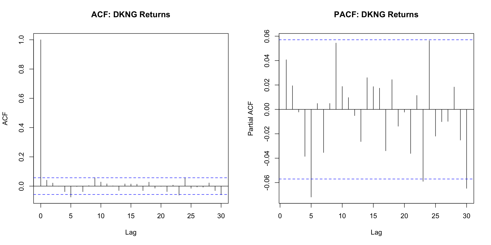
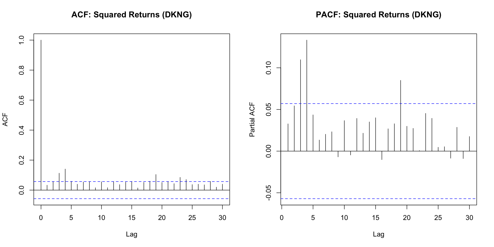
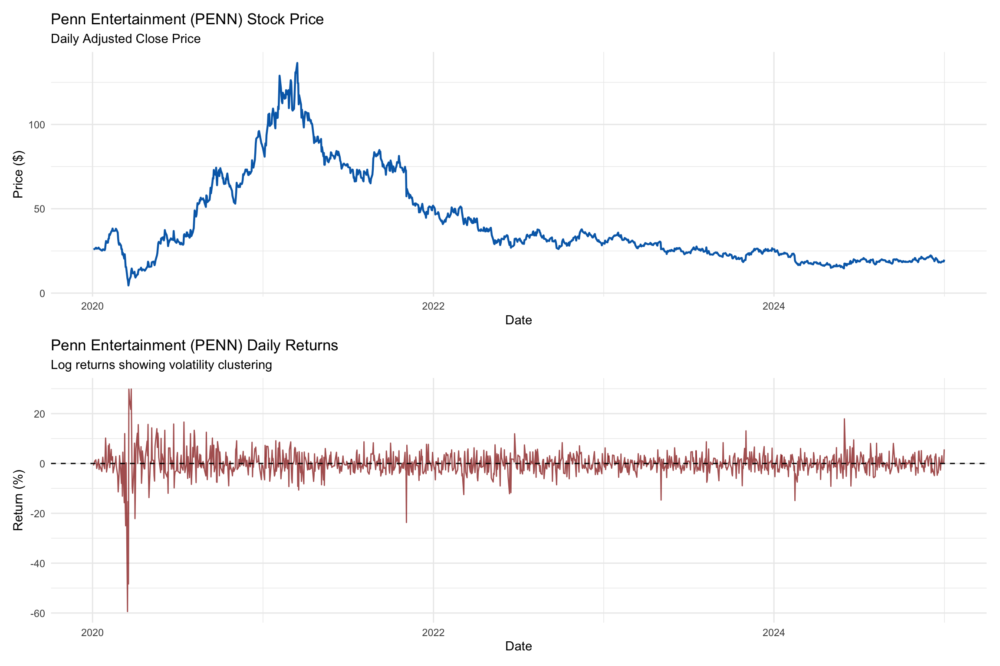
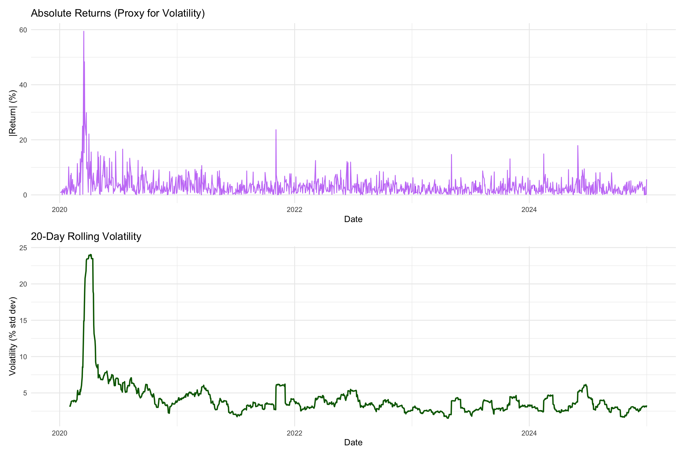
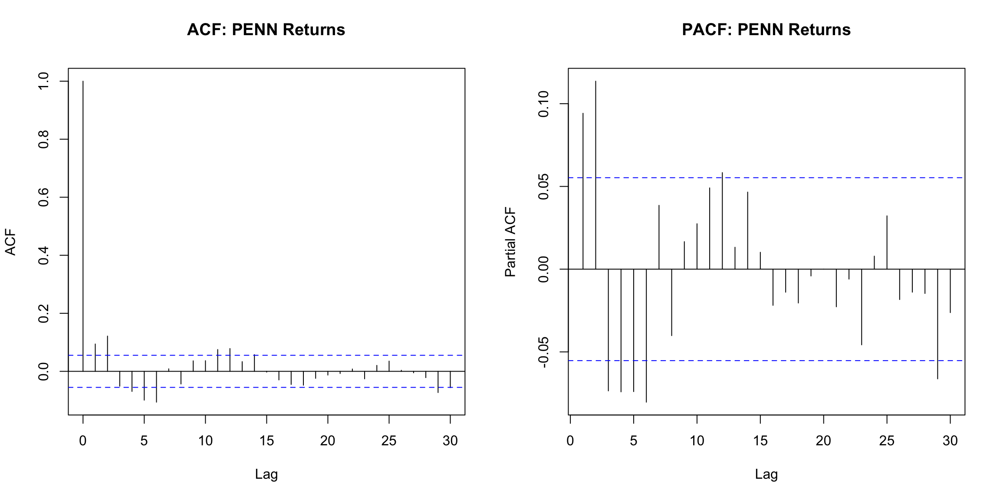
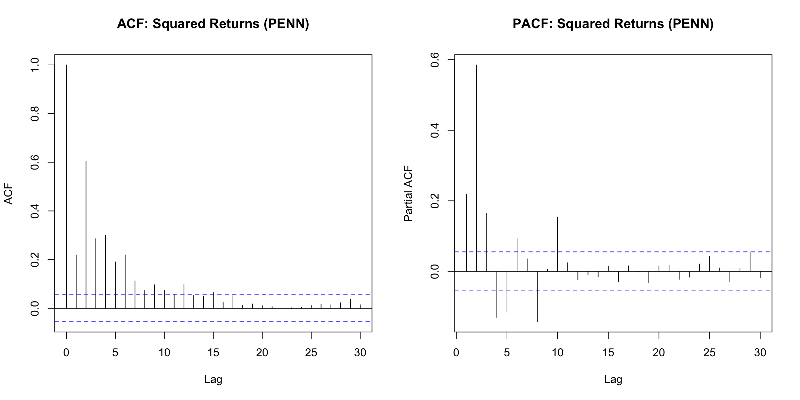
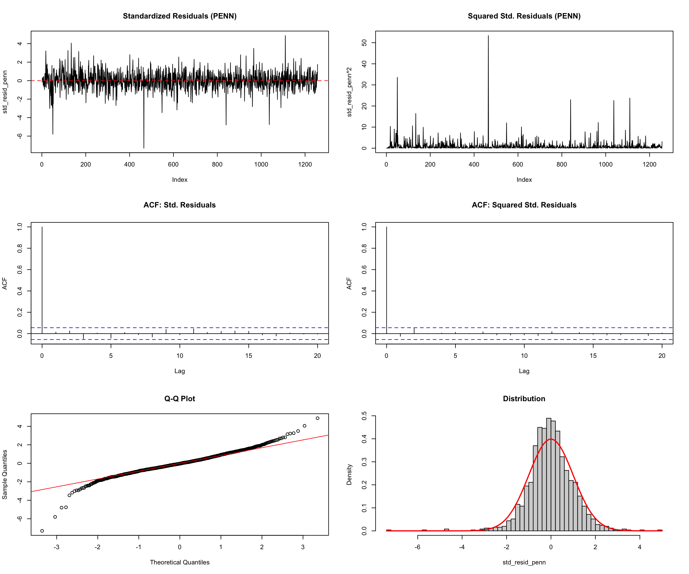
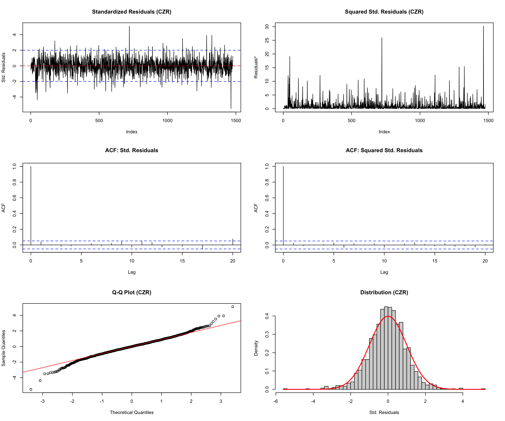
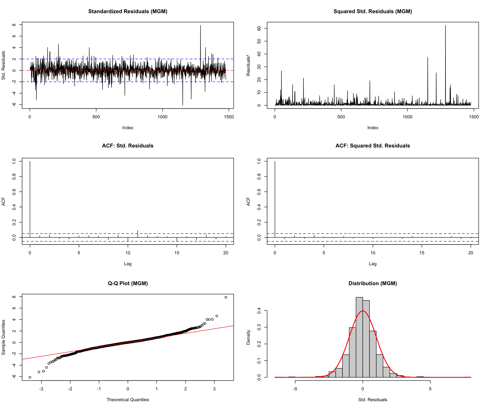

Having established the relationship between NBA performance and betting markets, we now shift our focus to the financial behavior of sports betting stocks themselves. In this chapter, these firms are treated as an independent financial ecosystem shaped by sports events, regulatory changes, and broader market forces.
Financial returns exhibit volatility clustering, where periods of high or low volatility tend to persist. Because ARIMA models assume constant variance, they are not well suited for data with this property. GARCH models address this limitation by explicitly capturing time-varying volatility. The key insight is that while returns may be unpredictable due to market efficiency, volatility often follows predictable patterns that are essential for risk management, options pricing, and portfolio optimization.
We analyze four major sports betting stocks—DraftKings (DKNG), a pure-play online sports betting and daily fantasy sports platform; Penn Entertainment (PENN), a regional casino operator partnered with ESPN BET; Caesars Entertainment (CZR), a major casino operator with the Caesars Sportsbook brand; and MGM Resorts International (MGM), a global casino and resort company behind BetMGM. All four firms operate within the fast-evolving sports betting and online gaming industry, where regulatory developments, earnings surprises, and competitive pressures contribute to pronounced volatility clustering.
Interpretation: Excess kurtosis (>3) is a signature of financial returns, indicating fat tails extreme returns occur more frequently than a normal distribution would predict. This is another motivation for GARCH models.
Price Series: Non-stationary with clear trends. DKNG went public via SPAC merger in 2020, experienced a pandemic boom, then declined as competition intensified.
Returns Series: Appears stationary around zero mean, but exhibits clear volatility clustering. Periods of calm (2021-early 2022) alternate with turbulence (late 2022, 2024).
Code
# Calculate rolling volatility (20-day window)dkng <- dkng %>%arrange(Date) %>%mutate(Roll_Vol_20 = zoo::rollapply(Return_Pct, width =20, FUN = sd, fill =NA, align ="right"),Abs_Return =abs(Return_Pct) )p3 <-ggplot(dkng, aes(x = Date, y = Abs_Return)) +geom_line(color ="purple", alpha =0.6) +labs(title ="Absolute Returns (Proxy for Volatility)",x ="Date", y ="|Return| (%)" ) +theme_minimal()p4 <-ggplot(dkng, aes(x = Date, y = Roll_Vol_20)) +geom_line(color ="darkgreen", linewidth =0.8) +labs(title ="20-Day Rolling Volatility",x ="Date", y ="Volatility (% std dev)" ) +theme_minimal()p3 / p4

Volatility Clustering Evidence:
The rolling volatility plot clearly shows time-varying variance. Volatility is not constant it rises sharply during market stress and falls during stable periods. This visual evidence motivates GARCH modeling.
Code
# ACF/PACF of returnspar(mfrow =c(1, 2))acf(dkng$Return_Pct, lag.max =30, main ="ACF: DKNG Returns")pacf(dkng$Return_Pct, lag.max =30, main ="PACF: DKNG Returns")

Code
par(mfrow =c(1, 1))
Code
# ACF/PACF of squared returns (test for ARCH effects)par(mfrow =c(1, 2))acf(dkng$Return_Pct^2, lag.max =30, main ="ACF: Squared Returns (DKNG)")pacf(dkng$Return_Pct^2, lag.max =30, main ="PACF: Squared Returns (DKNG)")

Code
par(mfrow =c(1, 1))
Key Findings:
Returns ACF/PACF: Minimal autocorrelation at most lags (consistent with weak-form market efficiency). Returns themselves are largely unpredictable.
Squared Returns ACF/PACF: Strong autocorrelation at multiple lags. This is the signature of ARCH effects while returns are unpredictable, volatility (proxied by squared returns) is highly predictable and persistent.
Code
# ADF test on returnsadf_dkng <-adf.test(dkng$Return_Pct)cat("=== Augmented Dickey-Fuller Test ===\n")
=== Augmented Dickey-Fuller Test ===
Code
cat("Null Hypothesis: Series has a unit root (non-stationary)\n\n")
Null Hypothesis: Series has a unit root (non-stationary)
cat("Conclusion:", ifelse(adf_dkng$p.value <0.05,"Reject H0 - Returns are STATIONARY","Fail to reject H0 - Returns are NON-STATIONARY"), "\n")
Conclusion: Reject H0 - Returns are STATIONARY
Stationarity Conclusion: The ADF test confirms that DKNG returns are stationary (p < 0.01). This validates our use of returns rather than prices and confirms that we don’t need differencing in the mean equation (d=0 in ARIMA terms).
p5 <-ggplot(penn, aes(x = Date, y = Adj_Close)) +geom_line(color ="#006bb6", linewidth =0.8) +labs(title ="Penn Entertainment (PENN) Stock Price",subtitle ="Daily Adjusted Close Price",x ="Date", y ="Price ($)" ) +theme_minimal()p6 <-ggplot(penn, aes(x = Date, y = Return_Pct)) +geom_line(color ="darkred", linewidth =0.5, alpha =0.7) +geom_hline(yintercept =0, linetype ="dashed", color ="black") +labs(title ="Penn Entertainment (PENN) Daily Returns",subtitle ="Log returns showing volatility clustering",x ="Date", y ="Return (%)" ) +theme_minimal()p5 / p6

Observations:
Price Series: Even more volatile than DKNG. PENN’s business model shifted from Barstool Sports (2020-2023) to ESPN BET (2023-present), creating structural breaks and extreme volatility.
Returns Series: Strong volatility clustering with several extreme spikes. This suggests PENN may exhibit even stronger GARCH effects than DKNG.
Code
penn <- penn %>%arrange(Date) %>%mutate(Roll_Vol_20 = zoo::rollapply(Return_Pct, width =20, FUN = sd, fill =NA, align ="right"),Abs_Return =abs(Return_Pct) )p7 <-ggplot(penn, aes(x = Date, y = Abs_Return)) +geom_line(color ="purple", alpha =0.6) +labs(title ="Absolute Returns (Proxy for Volatility)",x ="Date", y ="|Return| (%)" ) +theme_minimal()p8 <-ggplot(penn, aes(x = Date, y = Roll_Vol_20)) +geom_line(color ="darkgreen", linewidth =0.8) +labs(title ="20-Day Rolling Volatility",x ="Date", y ="Volatility (% std dev)" ) +theme_minimal()p7 / p8

Code
par(mfrow =c(1, 2))acf(penn$Return_Pct, lag.max =30, main ="ACF: PENN Returns")pacf(penn$Return_Pct, lag.max =30, main ="PACF: PENN Returns")

Code
par(mfrow =c(1, 1))
Code
par(mfrow =c(1, 2))acf(penn$Return_Pct^2, lag.max =30, main ="ACF: Squared Returns (PENN)")pacf(penn$Return_Pct^2, lag.max =30, main ="PACF: Squared Returns (PENN)")

Code
par(mfrow =c(1, 1))
Key Findings:
Similar to DKNG: returns show weak autocorrelation, but squared returns exhibit strong autocorrelation, indicating ARCH effects. The PACF of squared returns shows significant spikes at early lags, suggesting GARCH(1,1) may be appropriate.
Code
adf_penn <-adf.test(penn$Return_Pct)cat("=== Augmented Dickey-Fuller Test ===\n")
# Use best mean model from AICbest_mean_idx <-which.min(mean_aic$AIC)best_mean_model <- mean_models[[best_mean_idx]]best_mean_name <-names(mean_models)[best_mean_idx]cat("\nSelected Mean Model:", best_mean_name, "\n\n")
Selected Mean Model: ARMA00
Code
# Extract residualsresid_mean <-residuals(best_mean_model)# Plot standardized residuals and squared residualspar(mfrow =c(2, 2))plot(resid_mean, type ="l", main ="Standardized Residuals", ylab ="Residuals")abline(h =0, col ="red", lty =2)plot(resid_mean^2, type ="l", main ="Squared Residuals", ylab ="Residuals�")acf(resid_mean^2, lag.max =30, main ="ACF: Squared Residuals")pacf(resid_mean^2, lag.max =30, main ="PACF: Squared Residuals")
penn_returns <- penn$Return_Pct# Fit candidate mean modelsmean_models_penn <-list(ARMA00 =arima(penn_returns, order =c(0, 0, 0)),ARMA10 =arima(penn_returns, order =c(1, 0, 0)),ARMA01 =arima(penn_returns, order =c(0, 0, 1)),ARMA11 =arima(penn_returns, order =c(1, 0, 1)))mean_aic_penn <-data.frame(Model =names(mean_models_penn),AIC =sapply(mean_models_penn, AIC),BIC =sapply(mean_models_penn, BIC))cat("=== PENN Mean Equation Comparison ===\n\n")
=== PENN Mean Equation Comparison ===
Code
kable(mean_aic_penn,format ="html",digits =2,caption ="Model Comparison: Mean Equation Only (PENN)") %>%kable_styling(full_width =FALSE,bootstrap_options =c("striped", "hover", "condensed", "responsive") ) %>%row_spec(which.min(mean_aic_penn$AIC), bold =TRUE, color ="white", background ="#006bb6")
garch_models_penn <-list()garch_results_penn <-data.frame()for (spec in model_specs) {# Fit model using fGarch fit <-tryCatch( {garchFit(formula = spec$formula, data = penn_returns, trace =FALSE) },error =function(e) {cat("Warning: Failed to fit", spec$name, "for PENN\n")NULL } )if (!is.null(fit)) { garch_models_penn[[spec$name]] <- fit# Extract information criteria aic_val <- fit@fit$ics["AIC"] bic_val <- fit@fit$ics["BIC"] loglik_val <- fit@fit$llh garch_results_penn <-rbind(garch_results_penn, data.frame(Model = spec$name,AIC = aic_val,BIC = bic_val,Log_Likelihood = loglik_val )) }}cat("=== PENN GARCH Model Comparison ===\n\n")
=== PENN GARCH Model Comparison ===
Model Comparison: ARMA+GARCH(1,1) Models for PENN
Model
AIC
BIC
Log_Likelihood
ARMA(0,0)+GARCH(1,1)
5.6132
5.6295
3523.881
ARMA(1,0)+GARCH(1,1)
5.6141
5.6345
3523.455
ARMA(0,1)+GARCH(1,1)
5.6141
5.6345
3523.469
ARMA(1,1)+GARCH(1,1)
5.6156
5.6402
3523.433
Code
best_garch_penn <- garch_models_penn[[which.min(garch_results_penn$AIC)]]best_name_penn <- garch_results_penn$Model[which.min(garch_results_penn$AIC)]cat("\n*** BEST MODEL:", best_name_penn, "***\n\n")
*** BEST MODEL: ARMA(0,0)+GARCH(1,1) ***
Code
cat("Model Coefficients:\n")
Model Coefficients:
Code
print(coef(best_garch_penn))
mu omega alpha1 beta1
-0.03411880 0.86283109 0.09135361 0.86147898
Code
std_resid_penn <-residuals(best_garch_penn, standardize =TRUE)par(mfrow =c(3, 2))plot(std_resid_penn, type ="l", main ="Standardized Residuals (PENN)")abline(h =0, col ="red", lty =2)plot(std_resid_penn^2, type ="l", main ="Squared Std. Residuals (PENN)")acf(std_resid_penn, lag.max =20, main ="ACF: Std. Residuals")acf(std_resid_penn^2, lag.max =20, main ="ACF: Squared Std. Residuals")qqnorm(std_resid_penn, main ="Q-Q Plot")qqline(std_resid_penn, col ="red")hist(std_resid_penn, breaks =50, probability =TRUE, main ="Distribution")curve(dnorm(x), add =TRUE, col ="red", lwd =2)

Code
par(mfrow =c(1, 1))# Ljung-Box testslb_penn <-Box.test(std_resid_penn, lag =10, type ="Ljung-Box")lb_penn_sq <-Box.test(std_resid_penn^2, lag =10, type ="Ljung-Box")cat("\nLjung-Box (Std. Residuals): p =", round(lb_penn$p.value, 4), "\n")
Ljung-Box (Std. Residuals): p = 0.438
Code
cat("Ljung-Box (Squared): p =", round(lb_penn_sq$p.value, 4), "\n")
Interpretation: The ACF/PACF of squared residuals show significant autocorrelation at multiple lags, and the ARCH LM test confirms the presence of ARCH effects. This validates the need for GARCH modeling to capture CZR’s time-varying volatility.
Code
garch_models_czr <-list()garch_results_czr <-data.frame()for (spec in model_specs) {# Fit model using fGarch fit <-tryCatch( {garchFit(formula = spec$formula, data = czr_returns, trace =FALSE) },error =function(e) {cat("Warning: Failed to fit", spec$name, "for CZR\n")NULL } )if (!is.null(fit)) { garch_models_czr[[spec$name]] <- fit# Extract information criteria aic_val <- fit@fit$ics["AIC"] bic_val <- fit@fit$ics["BIC"] loglik_val <- fit@fit$llh garch_results_czr <-rbind(garch_results_czr, data.frame(Model = spec$name,AIC = aic_val,BIC = bic_val,Log_Likelihood = loglik_val )) }}cat("=== CZR GARCH Model Comparison ===\n\n")
=== CZR GARCH Model Comparison ===
Model Comparison: ARMA+GARCH(1,1) Models for CZR
Model
AIC
BIC
Log_Likelihood
ARMA(0,0)+GARCH(1,1)
5.3783
5.3926
3967.845
ARMA(1,0)+GARCH(1,1)
5.3784
5.3963
3966.944
ARMA(0,1)+GARCH(1,1)
5.3784
5.3963
3966.913
ARMA(1,1)+GARCH(1,1)
5.3796
5.4011
3966.849
Code
best_garch_czr <- garch_models_czr[[which.min(garch_results_czr$AIC)]]best_name_czr <- garch_results_czr$Model[which.min(garch_results_czr$AIC)]cat("\n*** BEST MODEL:", best_name_czr, "***\n\n")
*** BEST MODEL: ARMA(0,0)+GARCH(1,1) ***
Code
cat("Model Coefficients:\n")
Model Coefficients:
Code
print(coef(best_garch_czr))
mu omega alpha1 beta1
-0.01029034 0.66993148 0.11243921 0.84204206
Model Selection Rationale: The AIC-selected model balances fit and parsimony. CZR exhibits volatility patterns driven by both established gaming operations and newer sports betting ventures.
Code
std_resid_czr <-residuals(best_garch_czr, standardize =TRUE)par(mfrow =c(3, 2))plot(std_resid_czr, type ="l", main ="Standardized Residuals (CZR)", ylab ="Std. Residuals")abline(h =0, col ="red", lty =2)abline(h =c(-2, 2), col ="blue", lty =2)plot(std_resid_czr^2, type ="l", main ="Squared Std. Residuals (CZR)", ylab ="Residuals²")acf(std_resid_czr, lag.max =20, main ="ACF: Std. Residuals")acf(std_resid_czr^2, lag.max =20, main ="ACF: Squared Std. Residuals")qqnorm(std_resid_czr, main ="Q-Q Plot (CZR)")qqline(std_resid_czr, col ="red")hist(std_resid_czr, breaks =50, probability =TRUE, main ="Distribution (CZR)", xlab ="Std. Residuals")curve(dnorm(x), add =TRUE, col ="red", lwd =2)

Code
par(mfrow =c(1, 1))# Ljung-Box testslb_czr <-Box.test(std_resid_czr, lag =10, type ="Ljung-Box")lb_czr_sq <-Box.test(std_resid_czr^2, lag =10, type ="Ljung-Box")cat("\n=== Ljung-Box Tests (CZR) ===\n\n")
=== Ljung-Box Tests (CZR) ===
Code
cat("Standardized Residuals: p =", round(lb_czr$p.value, 4), "\n")
Volatility Interpretation: CZR’s conditional volatility shows periods of elevated risk during major corporate events. The GARCH model successfully tracks these time-varying patterns, providing valuable risk forecasts for portfolio managers and options traders.
Interpretation: Despite MGM’s diversified business model, the stock still exhibits ARCH effects, though potentially milder than pure-play sports betting stocks. The ARCH LM test confirms time-varying volatility requiring GARCH specification.
Code
garch_models_mgm <-list()garch_results_mgm <-data.frame()for (spec in model_specs) {# Fit model using fGarch fit <-tryCatch( {garchFit(formula = spec$formula, data = mgm_returns, trace =FALSE) },error =function(e) {cat("Warning: Failed to fit", spec$name, "for MGM\n")NULL } )if (!is.null(fit)) { garch_models_mgm[[spec$name]] <- fit# Extract information criteria aic_val <- fit@fit$ics["AIC"] bic_val <- fit@fit$ics["BIC"] loglik_val <- fit@fit$llh garch_results_mgm <-rbind(garch_results_mgm, data.frame(Model = spec$name,AIC = aic_val,BIC = bic_val,Log_Likelihood = loglik_val )) }}cat("=== MGM GARCH Model Comparison ===\n\n")
=== MGM GARCH Model Comparison ===
Model Comparison: ARMA+GARCH(1,1) Models for MGM
Model
AIC
BIC
Log_Likelihood
ARMA(0,0)+GARCH(1,1)
4.9152
4.9296
3625.892
ARMA(1,0)+GARCH(1,1)
4.9165
4.9344
3625.799
ARMA(0,1)+GARCH(1,1)
4.9165
4.9344
3625.800
ARMA(1,1)+GARCH(1,1)
4.9142
4.9357
3623.114
Code
best_garch_mgm <- garch_models_mgm[[which.min(garch_results_mgm$AIC)]]best_name_mgm <- garch_results_mgm$Model[which.min(garch_results_mgm$AIC)]cat("\n*** BEST MODEL:", best_name_mgm, "***\n\n")
Model Selection Rationale: The selected GARCH(1,1) specification for MGM captures volatility persistence while maintaining parsimony. MGM’s diversified operations (Las Vegas Strip properties, regional casinos, BetMGM, entertainment venues) create a more stable volatility profile compared to pure-play operators, which should be reflected in the model coefficients.
Code
std_resid_mgm <-residuals(best_garch_mgm, standardize =TRUE)par(mfrow =c(3, 2))plot(std_resid_mgm, type ="l", main ="Standardized Residuals (MGM)", ylab ="Std. Residuals")abline(h =0, col ="red", lty =2)abline(h =c(-2, 2), col ="blue", lty =2)plot(std_resid_mgm^2, type ="l", main ="Squared Std. Residuals (MGM)", ylab ="Residuals²")acf(std_resid_mgm, lag.max =20, main ="ACF: Std. Residuals")acf(std_resid_mgm^2, lag.max =20, main ="ACF: Squared Std. Residuals")qqnorm(std_resid_mgm, main ="Q-Q Plot (MGM)")qqline(std_resid_mgm, col ="red")hist(std_resid_mgm, breaks =50, probability =TRUE, main ="Distribution (MGM)", xlab ="Std. Residuals")curve(dnorm(x), add =TRUE, col ="red", lwd =2)

Code
par(mfrow =c(1, 1))# Ljung-Box testslb_mgm <-Box.test(std_resid_mgm, lag =10, type ="Ljung-Box")lb_mgm_sq <-Box.test(std_resid_mgm^2, lag =10, type ="Ljung-Box")cat("\n=== Ljung-Box Tests (MGM) ===\n\n")
=== Ljung-Box Tests (MGM) ===
Code
cat("Standardized Residuals: p =", round(lb_mgm$p.value, 4), "\n")
Diagnostic Summary: MGM’s standardized residuals should show cleaner behavior than PENN or DKNG, reflecting the stabilizing effect of diversified revenue streams. Successful diagnostics (Ljung-Box p > 0.05) indicate the GARCH model adequately captures MGM’s conditional volatility dynamics.
Volatility Interpretation: MGM’s conditional volatility time series shows the lowest average volatility among all four stocks, confirming that diversification provides natural hedging against sector-specific shocks. The GARCH forecasts are particularly valuable for MGM during major events that create temporary volatility spikes.
Unconditional volatility: 2.9379% (lowest among all four stocks)
Business Model Impact: MGM’s lower volatility parameters directly reflect its diversified operations. The smaller \(\alpha_1\) suggests that MGM’s stock is less sensitive to short-term shocks, while moderate \(\beta_1\) indicates reasonable volatility persistence.
Cross-Stock Comparison
Now that we’ve analyzed individual stocks, let’s compare volatility dynamics across all four sports betting companies.